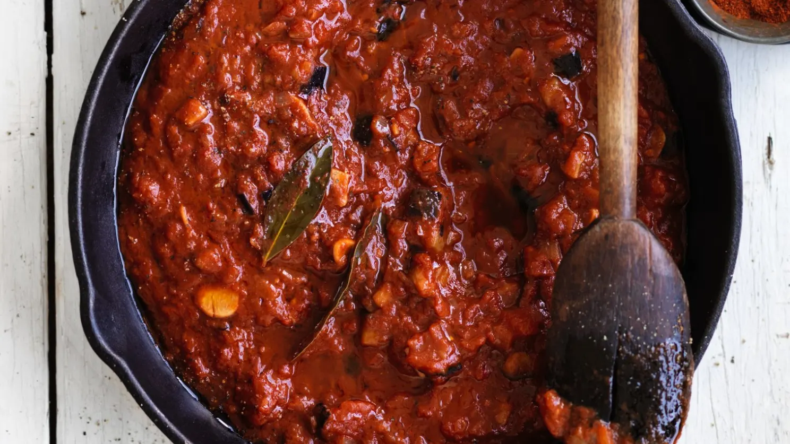

Pasta alla vodka

Description
Rich and delicious, this is a great standby simple pasta sauce. I like to
thicken it slightly, just before I add the wine, by dusting the flour
shaker over it. You only want a teaspoon or so of flour, stirred in
immediately and quickly to avoid lumps, but this cooks down to a silky
texture without any floury aftertaste and stops it separating when you
serve it. Serve with your favourite pasta.
Ingredients
- 1 large eggplant, stalk removed and cut into dice
- 2 tsp salt
- 1 medium onion, peeled and finely chopped
- 3 large cloves garlic, peeled and finely sliced
- 3 tins chopped tomatoes, 400g each
- 2 bay leaves
- 1 tbsp balsamic vinegare
- 1 tbsp tomato paste
- 1 tbsp balsamic vinegar
- 2 tsp brown sugar
- 1/2 tsp cayenne pepper
Steps
-
Heat 75 millilitres of olive oil in a large frying pan, then add the
eggplant, sprinkle over one teaspoon of salt, then fry over a high heat
until golden on all sides. Spoon the eggplant onto a plate.
-
Add the remaining 25 millilitres of olive oil to the pan, then add the
onion, garlic, remaining salt and 200 millilitres of water. Boil until
the water evaporates and the onion starts to turn golden, then add the
tomatoes and bay leaves and boil on a high heat for about 15 to 25
minutes until the juice evaporates to a thick sauce.
-
Stir in the vinegar, wine, tomato paste, sugar and cayenne pepper and
simmer for five to 10 minutes until thick again. Add the eggplant, stir
well and check the seasoning, then heat until boiling to serve. The
sauce keeps well in the fridge for a few days or up to three months in
the freezer.